The original, as published: DoITPoMS, University of Cambridge, Introduction to Mechanical Properties of Materials. CC BY-NC-SA 4.0, https://creativecommons.org/licenses/by-nc-sa/4.0/. As published, from https://www.doitpoms.ac.uk/tlplib/mechanical_properties/ https://www.doitpoms.ac.uk/tlplib/mechanical_properties/
In response to an applied force, a material might behave in different ways.
For example, a spring extends when there is a load suspended from it and after the load is removed, it returns to the original shape; this behaviour is known as elastic deformation.
Bending a paper clip and crimping cause permanent shape changes; this behaviour is known as plastic deformation.
Breaking a glass and snapping a piece of dry spaghetti are examples of fracture.
Let us define these behaviours:
These are the most common types of mechanical behaviour observed in materials. However, some exceptions do exist. For example, when placed on a flat surface, silly putty balls will flatten out over time. This response to the load (its own weight) is not instantaneous and therefore time-dependent. Materials like silly putty have a mechanical property called viscoelasticity, which means that they exhibit both viscous and elastic characteristics. Other types of time-dependent behaviour include creep for gradual plastic deformation and fatigue for gradual failure.
| Loading a spring | Unfolding a paper clip |
| Silly putty deforming (This video is accelerated ×10) |
One of the most common ways in which the mechanical properties of a material can be assessed is through a tensile test.
'Tensile' means the sample has increased in length, i.e. extension, with a positive displacement. 'Compressive' means the sample has decreased in length, i.e. compression, with a negative displacement.
Here, a specimen is commonly cut into a 'dog bone shape', which gives a better grip at the end and a constant cross sectional area in the middle where it is stretched. The corresponding force and extension of the sample are recorded simultaneously. Such a test can continue until it reaches a predetermined point or until the material is unable to sustain the load and fails.
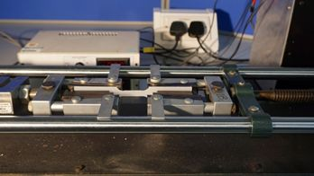
Figure 1: A tensometer with dog-bone sample loaded
You can investigate the mechanical behaviour of copper below, by adjusting the cross-sectional area and the length, and plotting force as a function of extension.
We can see that the behaviour measured by force and extension depends on the sample dimensions (cross-sectional area and length) of the samples. It is therefore more common to plot stress and strain instead, which translate force and extension to quantities independent of geometry.
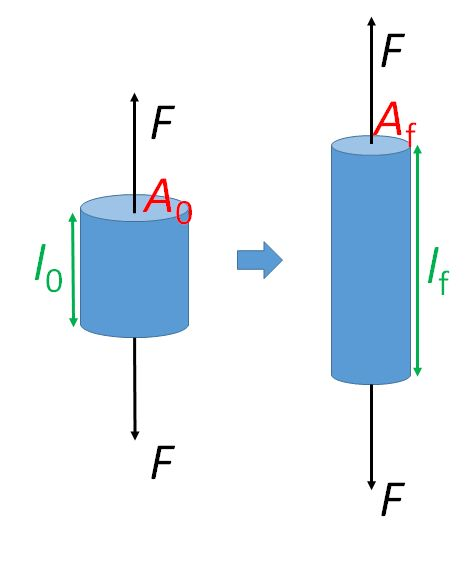
Figure 2: Sample geometry
Stress (SI unit: Pa) is defined as the applied force \( F \) (SI unit: N) per unit area \( A \) (SI unit: m),
\[ \sigma =\frac{F}{A} \]
Usually, we talk about the magnitude of the stress and specify whether it is tensile or compressive Here, we use the convention that tensile stress has a positive value and compressive stress has a negative value.
Strain (no unit, dimensionless) is the relative ratio of change in length \( \Delta l \) (SI unit: m) to original length \( l_0 \) (SI unit: m),
\[ \varepsilon = \frac{{{l_{\rm{f}}} - {l_0}}}{{{l_0}}} = \frac{{{\rm{\Delta }}l}}{{{l_0}}} \]
where \( l_{\rm{f}} \) is the final length of the sample. As the displacement or change in size is positive for extension and negative for compression, tensile strain has a positive value and compressive strain has a negative value.
A typical tensile stress-strain curve for copper is shown below.
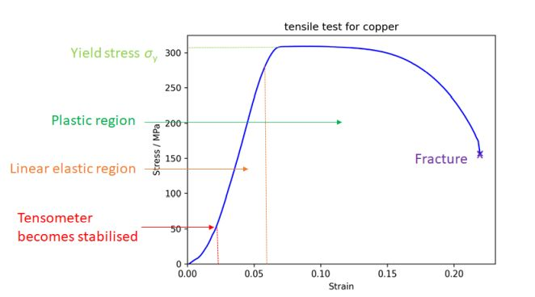
Figure 3. Stress vs strain curve for copper
We can see that this curve is independent of sample geometry.
When a material is pulled in one direction (uniaxial tensile stress is applied), it extends in that direction but contracts in the other two orthogonal directions. This is shown in the diagram below.
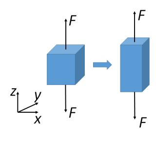
Figure 4. Changes in lateral and axial direction
For an isotropic material (meaning that they have the same properties in all directions), the ratio between the lateral and axial strain is a constant (i.e.a material property), called the Poisson’s ratio (dimensionless) \( \nu \);
\[ \nu = - \frac{{{ \varepsilon_{\rm{y}}}}}{{{ \varepsilon_{\rm{x}}}}} = - \frac{{{ \varepsilon_{\rm{z}}}}}{{{ \varepsilon_x}}} = - \frac{{{\rm{lateral}}\left( {{\rm{transverse}}} \right) \ {\rm{strain}}}}{{{\rm{axial}}\left( {{\rm{longitudinal}}} \right) \ {\rm{strain}}}} \]
for a pair of stress applied in the x direction. As tensile and compressive strains have different signs, a minus sign is used to make the overall sign of the Poisson’s ratio positive.
The Poisson’s ratio for most materials is in the range 0.2 to 0.5, with most metals having a value around 0.3. However, there are some materials that have Poisson’s ratios outside this range, for example, cork has a Poisson’s ratio close to 0 and, therefore, shows little dimensional change in the directions perpendicular to an applied stress. Some materials, called auxetic materials, have a negative Poisson’s ratio, meaning they expand in all dimensions when subjected to a tensile stress.
If volume is conserved, the Poisson’s ratio is 0.5 (see proof here). Since the strain is small for most of the elastic deformation, it is a good approximation to assume volume change is negligible.
Considering the case of uniaxial tensile or compressive stress, the change in the cross-sectional area and length due to lateral strain leads to two definitions for the stress and strain.
Nominal or engineering stress, \( \sigma_{\rm{N}} \) is given by the ratio of the applied force, \( F \), to the original cross sectional area, \( A_0 \):
\[ {\sigma _{\rm{N}}} = \frac{F}{{{A_0}}} \]
Nominal or engineering strain, \( \varepsilon_{\rm{N}} \) is given by the ratio of the change in length, \( \Delta l \), to the original length,\( l_0 \):
\[ {\varepsilon_{\rm{N}}} = \frac{{\Delta l}}{{{l_0}}} \]
True stress, \( \sigma _{\rm{T}} \) is given by the ratio of force, \( F \), to the current cross sectional area, \( A_i \), on which it acts:
\[ {\sigma _{\rm{T}}} = \frac{F}{{{A_i}}} \]
True strain, \( \varepsilon_{\rm{T}} \) is given by the ratio of change in length \( \delta l \) to current length \( l \), so the incremental change in the strain is:
\[ \delta {\varepsilon_{\rm{T}}} = \frac{{\delta l}}{l} \]
As the change in length is continuous from initial length, \( l_0 \) to final length, \( l_{\rm{i}} \), the overall true strain can be obtained from integration:
\[ {\varepsilon_T} = \mathop \smallint \limits_{{l_0}}^{{l_{\rm{i}}}} \frac{{dl}}{l} = \ln \frac{{{l_i}}}{{{l_0}}} \]
The true stress and strain can be useful in the case of necking, where there is a significant reduction in cross sectional area leading to failure.
Figure 5. Necking of polyethylene
The difference between true and nominal stress is illustrated in the schematic stress-strain graphs below.
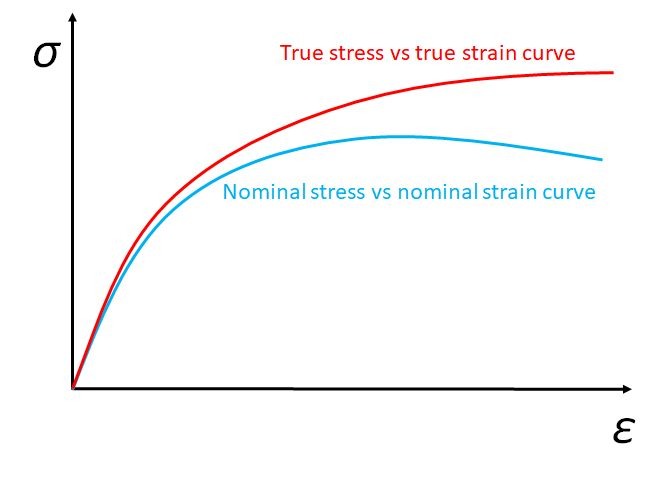
Figure 6. True stress vs true strain curve and nominal stress vs nominal strain curve
However, in this TLP, we will only deal with nominal stress and strain for simplicity.
In the above cases, we have only considered the normal stress, \( \sigma \) and strain, \( \varepsilon \), where a pair of opposite forces act perpendicularly to the surface, with displacement perpendicular to the surface (either extension or compression). It is possible for a pair of opposite forces to act parallel to the surface, with displacement parallel to the surface (shear); such a case leads to shear stress, \( \tau \), and strain, \( \gamma \).
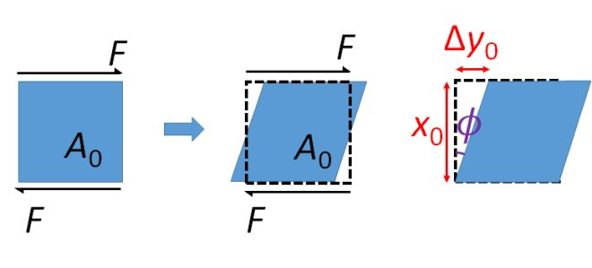
Figure 7. Shear effect
Shear stress, \( \tau \), is the parallel force, \( F \), per unit original area, \( A_0 \), of the parallel surface,
\[ \tau = \frac{F}{{{A_0}}} \]
Shear strain, \( \gamma \), is the ratio of perpendicular change of length, \( {\rm{\Delta }}{y_0} \), to the original length, \( x_0 \):
\[ \gamma = \frac{{{\rm{\Delta }}{y_0}}}{{{x_0}}} = \tan \phi \]
The angle through which the material has been sheared is commonly referred to as the angle of shear, \( \phi \).
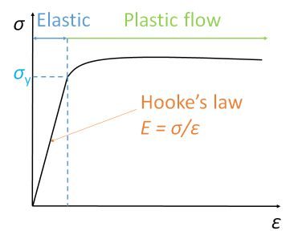
Figure 8. Stress and strain curve
Elastic deformation only occurs within the elastic limit. Below the yield strength, a material can restore its original shape once the stress is removed. For most crystalline materials inside this region, the ratio of stress and strain will be constant – they obey Hooke’s law.
Hooke’s law states that the stress is directly proportional to strain. This upper limit of stress that can be applied for Hooke’s law to be obeyed is called the proportional limit. The constant ratio of stress to strain in this region is defined as Young’s modulus (SI unit: Pa), \( E \), also known as stiffness.
\[ E = \frac{\sigma }{\varepsilon} \]
Young’s modulus is a material property; it is independent of geometry and is the same for the same material. Young’s moduli of materials are usually large, and so are expressed in GPa (109 Pa). They cover a broad range from 10−3 to 103 GPa, with most structural metals having Young’s moduli between 100 and 200 GPa.
Materials possessing structural anisotropy may have different Young’s moduli in different directions. For example, woods have higher Young’s moduli when tested along the grains and lower Young’s moduli when tested perpendicular to the grains.
Similarly, we can define Shear modulus or rigidity modulus, \( G \), by
\[ G = \frac{\tau }{\gamma } \]
So far, we have seen Young’s modulus for uniaxial tension and shear modulus for forces coplanar with a material's cross section. There is one more elastic constant, describing the volume change, namely, bulk modulus, \( K \), defined as the ratio of hydrostatic stress, \( \sigma_{\rm{h}} \), to the volumetric strain, \( \Delta \):
\[ K = \frac{{{\sigma_\rm{h}}}}{{\rm{\Delta }}} \]
where hydrostatic stress consists of three pairs of equal and opposite stresses in 3D, and volumetric strain is the change in volume divided by the original volume. Their relationship can be explored further using Cartesian Tensors.
For isotropic materials, Young’s modulus and shear modulus can be related via Poisson’s ratio,
\[ E = 2G\left( {1 + \nu } \right) \]
See proof here.
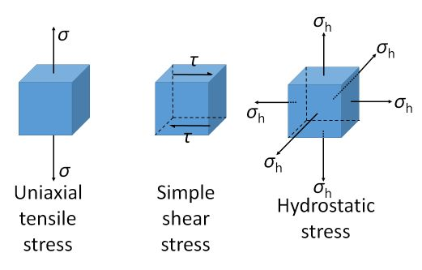
Figure 9. Different stress states
It is found that for some polymeric materials, such as silly putty and wood, it takes some time for them to respond to an applied stress. This behaviour is time dependent.
We have encountered the linear elastic behaviour for solids with Young’s modulus,
\[ \sigma = E \varepsilon \]
or with shear modulus,
\[ \tau = G\gamma \]
Now we introduce the elastic behaviour for a Newtonian fluid (which comes from the modified version of Newton's second law), where the shear strain rate, \( \frac{{\rm{d}\gamma }}{{\rm{d}}t} \) is proportional to the applied stress, \( \tau \), with a constant of proportionality called viscosity, \( \eta \),
\[ \tau = \eta \frac{{\rm{d}\gamma }}{{\rm{d}}t} \]
At higher temperatures, molecular motion is easier, so the viscosity is temperature dependent,
\[ \eta = {\eta _0}\ {\rm{exp}}\left( {\frac{Q}{{RT}}} \right) \]
Note the fluid elastic behaviour is time dependent, where solid elastic behaviour is time independent.
It is found that many polymeric organic biomaterials, such as wood, have a mixture of these behaviours, called viscoelasticity. This time dependent elastic behaviour can be modelled using Maxwell’s model.
Here, the linear-elastic solid is modelled as a spring:
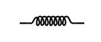
\[ \sigma = k{\varepsilon_{\rm{s}}} \]
and the ideal Newtonian fluid as a dashpot:
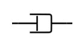
\[ \sigma = \eta \frac{{\rm{d}\varepsilon{_{\rm{l}}}}}{{\rm{d}}t} \]
A spring can store energy when compressed, whereas a dashpot absorbs energy.
In Maxwell’s model, a spring and a dashpot are in series:
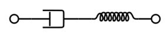
Stresses are equal for components in series and the strains and strain rates can be added,
\[ \varepsilon = { \varepsilon_{\rm{l}}} + { \varepsilon_{\rm{s}}} \]
\[ \dot \varepsilon = {\dot \varepsilon{_{\rm{l}}}} + {{\dot\varepsilon_{\rm{s}}}} \]
\[ \dot \varepsilon = \frac{\sigma }{\eta } + \frac{{\dot \sigma }}{k} \]
\[ k\dot\varepsilon = \frac{k}{\eta }\sigma + \dot \sigma \]
\[ k\dot\varepsilon = \frac{1}{{{t_{\rm{R}}}}}\sigma + \dot \sigma \]
where we let \( {t_{\rm{R}}} = \frac{\eta }{k} \), which is also known as the characteristic relaxation time.
We impose an oscillating stress, which produces a (not necessarily in-phase) strain,
\[ \sigma = {\sigma _0}\exp \left( {i\omega t} \right) \]
\[ \varepsilon = {\varepsilon_0}{\rm{exp}} \left( {i\omega t + \phi } \right) \]
where \( \omega \) is the angular frequency, indicating how frequently the stress and strain oscillate.
Solving the differential equation yields elastic modulus, \( E \) as,
\[ E = \frac{{k{\omega ^2}t_{\rm{R}}^2}}{{1 + {\omega ^2}t_{\rm{R}}^2}} \]
and phase difference, \( \phi \) as,
\[ {\rm{tan}}\phi = \frac{1}{{\omega {t_{\rm{R}}}}} \]
Therefore, a more quantitative description of viscoelasticity using Maxwell’s model is as follows.
High frequencies \( (\omega {t_{\rm{R}}} \) >> 1): phase difference \( \phi \) tends to 0, and there is no delay in the strain response to applied stress. The material behaves like a linear-elastic solid.
Low frequencies \( (\omega {t_{\rm{R}}} \) << 1): phase difference \( \phi \) tends to \( \frac{\pi }{2} \), and elastic modulus E tends to \( k{\omega ^2}t_{\rm{R}}^2 \) and thus to 0. The material behaves like a Newtonian liquid.
Intermediate frequencies \( (\omega {t_{\rm{R}}} \sim 1) \): Stress and strain are out of phase by an intermediate amount. The material behaves like a solid in the sense that the strain is recovered each cycle, but energy is dissipated.
The Maxwell model does not adequately describe the response when subjected to a constant stress. The Voigt model is better at describing this behaviour, with some time dependence and strain tending to a maximum constant value (controlled by the spring).
A clear problem with the Voigt model is that it doesn’t work well at high frequency (the stiffness becomes very large, dominated by the dashpot). A solution to this is the standard linear solid model.
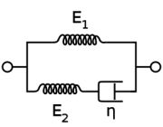
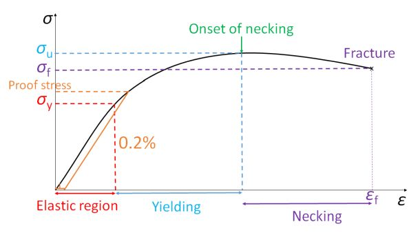
Figure 10. A typical nominal stress and strain curve for ductile metal
Let’s come back to the stress-strain curve given by the tensile test and focus on the region beyond a certain stress limit, where the material cannot recover to its original shape. This onset stress limit for plastic deformation to occur is called the yield strength, \( \sigma_y \).
Sometimes the yield point is not well defined, so we will often measure the stress at which a certain amount of plastic deformation has occurred, called the offset yield strength. Proof stress is the point at which the material exhibits 0.2% of plastic deformation.
Strength is the property that measures a material’s ability to withstand plastic deformation.
Ultimate tensile strength (\( \sigma_u \) or UTS) is the maximum stress that a material can withstand while being stretched or pulled before breaking. \( \sigma_u \) indicates the onset of necking. See details in the Mechanical Testing of Metals TLP.
Failure stress or failure strength. \( \sigma_f \) is the stress at which the sample finally fails.
Ductility is a measure of the degree of plastic deformation that has been sustained at fracture. It can be expressed qualitatively as either percent elongation (%EL) or percent reduction in area (%RA).
\[ \%{\rm{EL}} = \frac{l_{\rm{f}} - l_{\rm{0}}}{l_{\rm{0}}} \times 100\% \]
\[ \%{\rm{RA}} = \frac{A_{\rm{0}} - A_{\rm{f}}}{A_{\rm{0}}} \times 100\% \]
Note the percentage elongation is identical to Strain to failure \( \varepsilon_\rm{f} \), i.e., the total strain of the sample at the point of final failure.
Therefore, to summarise, a tensile test allows us to measure the following mechanical properties:
The plastic behaviour of crystal materials is significantly determined by the linear microstructural defects known as dislocations. Dislocation motion along a crystallographic direction is called glide or slip. For an introduction to dislocation, see here.
Plastic deformation of metals most commonly occurs as a result of the glide of dislocations, driven by shear stresses.
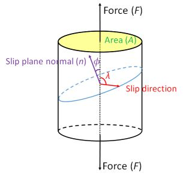
Figure 11. Slip geometry
Consider a single crystal with numerous dislocations, with a stress applied to it at an arbitrary angle. Each available slip system will experience a resolved shear stress acting in the associated slip plane in the slip direction.
The slip plane normal makes an angle \( \phi \) with the tensile axis, so the area of the plane is \( A{\left( {{\rm{cos}}\phi } \right)^{}}^{ - 1} \).
If the slip direction is at an angle of \( \lambda \) to the tensile axis then the resolved component of the applied force, \( F \), parallel to the slip direction is \( F \rm{cos} \lambda \).
Therefore, the resolved component of the shear stress on the slip planes acting parallel to the slip direction, \( \tau _{\rm{R}} \).
\[ {\tau _{\rm{R}}} = \frac{{F{\rm{cos}}\lambda }}{{A{{\left( {{\rm{cos}}\phi } \right)}^{}}^{ - 1}}} = \sigma {\rm{cos}}\lambda {\rm{cos}}\phi \]
Schmid's Law states that the value of \( \tau _{\rm{R}} \) at which slip occurs in a given material with specified dislocation density and purity is a constant, known as the critical resolved shear stress,\( \tau _{\rm{c}} \).
\[ {\tau _{\rm{c}}} = {\sigma _{\rm{y}}}{\rm{cos}}\lambda {\rm{cos}}\phi \]
Where \( {\rm{cos}}\lambda {\rm{cos}}\phi \) is called the Schmid factor and \( \sigma_y \) is the yield stress.
Note that the Schmid factor can have a value between 0 and 0.5.
Since the critical resolved shear stress for all slip systems is the same, Schmid’s law indicates that the slip system with the highest Schmid factor would yield first. Such as slip system is called the primary slip system.
The stress required to cause slip on the primary slip system is the yield stress of the single crystal. If the stress is increased beyond the yield stress, other slip systems may become operative. For a more detailed description of slip in single crystals, click here.
For polycrystalline materials with randomly orientated grains, the average value of the Schmid factor is ~⅓. This average value is referred to as the Taylor factor and so it might be expected that the yield stress and the critical resolved shear stress for polycrystalline materials would be related as follows:
\[ \sigma_\rm{y} \approx 3{\tau_\rm{c}} \]
However, in practice, the yield stress of a polycrystalline metal is often much higher than this, due to the effect of grain boundaries. In a polycrystal, the deformation of each individual grain has to be compatible with that of its neighbours, which can lead to a significant constraint. Multiple slip is normally required from the outset in virtually all grains in order to satisfy this requirement and, thus, substantially higher stresses are required for yielding and subsequent plasticity of polycrystals than those needed for single crystals.
Hardness is a measure of a material’s resistance to localised plastic deformation, e.g. a small indent or scratch. A high hardness comes from a combination of high \( \sigma_{\rm{y}} \) and high \( \sigma_{\rm{u}} \).
Hardness is important when considering a material’s resistance to wear. For example, we want to make chain saw teeth from a hard material so that frequent replacement is not required.
Mohs scale for hardness is based on the ability of one natural sample of material to scratch another material visibly. The harder the material is, the easier it is to leave a mark when scratching other softer materials, and the higher the Mohs hardness it has.
Ten standard minerals with their Mohs hardness are given below for reference.
| Mohs hardness | Reference mineral |
| 1 | Talc |
| 2 | Gypsum |
| 3 | Calcite |
| 4 | Fluorite |
| 5 | Apatite |
| 6 | Orthoclase feldspar |
| 7 | Quartz |
| 8 | Topaz |
| 9 | Corundum |
| 10 | Diamond |
A Vickers hardness test is a more quantitative measurement of hardness. An indentation is made with a known applied force and the contact area is measured using micrometre under a microscope. See here for the geometry of Vickers hardness test.
The Vickers hardness number \( H_{\rm{v}} \), in HV (kgf mm−2) is the ratio of the applied force \( F \), in kgf, to the contact area \( A \), in mm2,
\[ {H_{\rm{v}}} = 1.854\frac{F}{{{D^2}}} \]
where \( D \) is the average length of the diagonal left by the indenter, measured in millimetres.
Hardness and yield stress are very closely related. Generally, higher yield stress means higher hardness. But hardness defined in a more localised way. From plastic flow analysis (using finite element method), we have the following relationship between the yield stress \( \sigma _{\rm{y}} \) and Vickers hardness \( H_{\rm{v}} \),
\[ {\sigma _{\rm{y}}} \approx \frac{{{H_{\rm{v}}}}}{3} \]
However, the yield stress obtained using this relationship may be underestimated as we did not consider the effect of work hardening.
It is observed that the hardness and strength of materials are increased in the area of plastic deformation. This process is called work hardening, strain hardening or forest hardening. When plastic deformation takes place, dislocations glide in the active slip systems. After these dislocations meet other dislocations that are not in these slip system, they either intersect to produce jogs or combine together to form Lomer locks. In both cases, the dislocations are stuck (sessile) and it is therefore harder for plastic deformation to take place.
To explore work hardening further, see the mechanism of plasticity TLP.
Work hardening is an important mechanical process in manufacturing materials. Many manufacturing processes involve permanently deforming the material into the desired shape. It is advantageous that their hardness has increased so they will not be easily worn out, but this also makes the material more brittle and therefore more susceptible to fracture. Later in this TLP, we will explore fracture further.
At high temperature, materials might permanently deform over time even below their yield stress. This is due to the fact that dislocation climb or cross slip (dislocations migrating to a different slip plane) and diffusion of atoms become easier at high temperatures. This behaviour is known as creep.
Creep is defined as time-dependent permanent deformation (i.e. plastic, not elastic) of a material under the action of an applied stress \( \sigma_{\rm{applied}} \), the magnitude of which is less than the macroscopic yield stress \( \sigma_{\rm{y}} \).
Creep rate depends on:

Figure 12. Movement of ice in a glacier as an example of creep (Beagle Channel) (Wikicommons)
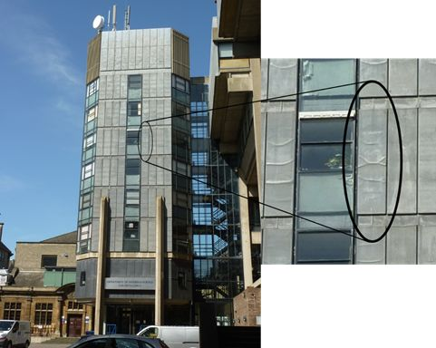
Figure 13. Creep of lead in the infrastructure of the former site of MSM, Cambridge
Creep is an important mechanical behaviour to consider for components subjected to high stresses for long periods of time at elevated temperature, for example jet engine turbine blades. See Creep Deformation of Metals TLP to explore creep in more detail.
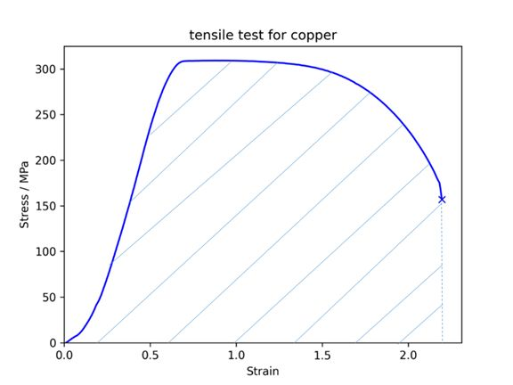
Figure 14. One measure of toughness is the energy absorption per unit area until fracture, indicated by shaded area under the stress strain curve
We now return to our tensile test for the final time and focus on the area under the stress-strain curve. The energy absorbed by the material per unit volume is given by the area under the curve, as the work done is:
\[ W = \smallint F\rm{d}x = \smallint \left( {\sigma A} \right)\left( {{l_0}\rm{d}\varepsilon} \right) = V\smallint \sigma \rm{d}\varepsilon \]
where the volume of the material is \( V = A{l_\rm{0}} \)
Toughness describes a material’s resistance to fracture. We can depict this quantitatively by measuring the amount of energy per unit volume a material can absorb before fracture.
Ductile materials undergo a relatively large amount of plastic deformation via a process known as necking before failure by fracture, and absorb more energy, thus have a relatively high toughness. A good example of a ductile material is copper.
Brittle materials hardly undergo any plastic deformation before fracture; they absorb less energy before fracture and thus have a relatively low toughness. Most ceramics are brittle.
Fracture is the failure process driven by crack propagation. A crack is a small flaw or notch and can be either inside the material or on the surface of the material. Because of the crack geometry, the applied tensile stress is amplified at the crack tip.
In ductile fracture, the crack is stable. It resists further growth unless the applied stress is increased, as a result of work hardening around the blunt crack tip. The process proceeds slowly as the crack length is extended, which allows necking to take place before fracture. The final fracture surface is rough with irregular fibrous appearance.
In brittle fracture, the crack is unstable. The crack tip is sharp with a high localised stress concentration. Crack propagation will continue spontaneously without increase in magnitude of the applied stress. Therefore, the crack grows rapidly. The final fracture surface is smooth and flat.
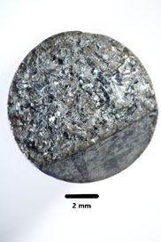
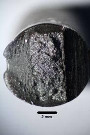
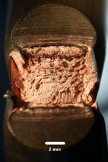
Figure 15. Fracture surface of brittle zinc (left), ductile mild steel (middle) and copper (right)
We can increase the toughness of a material in various ways. Please see the toughening and brittle fracture TLP for a detailed description for ductile and brittle fracture.
Most metals undergo a transition from brittle to ductile behaviour as temperature increases. When temperature is low, the temperature dependent dislocation movement is inhibited, making metallic materials more susceptible to brittle fracture.
The ductile-brittle transition temperature can be found by examining the material for a range of temperatures using the Charpy impact test. This involves impacting the sample with a pendulum with mass, \( m \) from the original height \( h_{\rm{i}} \) and measuring the recovery height \( h_{\rm{f}} \). The impact energy, \( U \) is
\[ U = mg\left( {{h_{\rm{i}}} - {h_{\rm{f}}}} \right) \]
This impact energy indicates the toughness of the material at a specific temperature. In a plot of impact energy against temperature, the temperature where there is a dramatic increase in impact energy is the ductile-brittle transition temperature.

Figure 16. Instrument for Charpy impact test
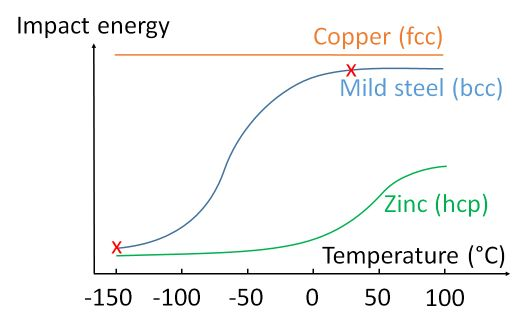
Figure 17. Variation in impact energy with temperature (red crosses indicate the samples tested in Figure 18.
hcp metals like zinc, have limited slip systems, so they remain brittle at room temperature. In contrast, fcc metals have a very low energy barrier for plastic flow, so do not usually show any ductile brittle transition in this temperature range. However, bcc metals, such as mild steel, become brittle at low temperatures. The ductile brittle transition can be shown by cooling mild steel in liquid nitrogen: samples tested at room temperature deform and absorb much more energy than samples tested at liquid nitrogen temperature.
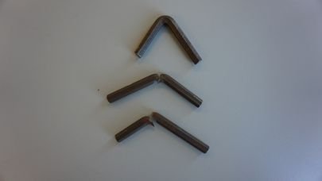
Figure 18. Mild steel under Charpy impact test (top sample tested at room temperature; bottom two cooled in liquid nitrogen)
The ductile brittle transition can be encountered in the polar regions, where a temperature close to the ductile-brittle transition can be achieved. This behaviour was first identified by Constance Tipper of the Engineering Department in Cambridge, when studying the failure mechanism of the Liberty Ships during the Second World War.

Figure 19: USS Ponaganset (AO-86), at the General Ship and Iron Works, Boston, MA., 9 December 1947, shortly after breaking in half during reactivation. (from Wikimedia Commons)
This TLP covers the following points:
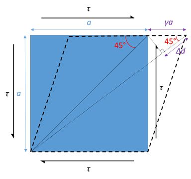
Consider a stress state above acting on a cube of length \( a \). Assume the shear strain \( \gamma \) is small such that the angle between the diagonal and length is approximately the same, i.e. 45°, before and after shearing.
Strain on the diagonal is
\[ \frac{{{\rm{\Delta }}d}}{{\sqrt 2 a}} = \frac{{\gamma a\;{\rm{cos}}45^\circ }}{{\sqrt 2 a}} = \frac{\gamma }{2} \]
From the definition of shear modulus,
\[ G = \frac{\tau }{\gamma } \]
Strain on the diagonal therefore is \( \frac{\tau }{{2G}} \).
Now consider a set of stress state equivalent to the above case.
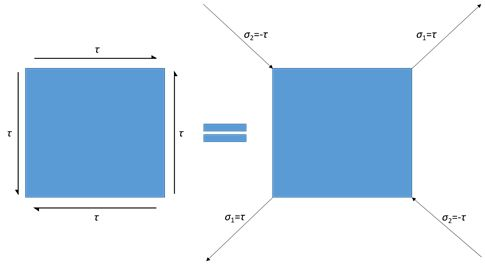
By the principle of superposition of two stress pairs, strain on the diagonal is
\[ \frac{{{\sigma _1}}}{E} - \nu \frac{{{\sigma _2}}}{E} = \frac{\tau }{E} - \nu \frac{{ - \tau }}{E} = \frac{\tau }{E}\left( {1 + \nu } \right) \]
where \( E \) is Young’s modulus and \( \nu \) is Poisson’s ratio.
Equating the diagonal strain in two cases gives the relation between Young’s modulus E and shear modulus G:
\[ \frac{\tau }{{2G}} = \frac{\tau }{E}\left( {1 + \nu } \right) \]
\[ E = 2G\left( {1 + \nu } \right) \]
We obtained the relation between Young’s modulus \( E \) and shear modulus \( G \).
We can also relate the bulk modulus \( K \) to Young’s modulus \( E \). Consider a hydrostatic stress state acting on an isotropic cube shown below.
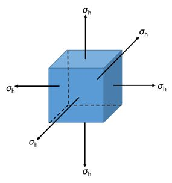
By the principle of superposition, the linear strain in each orthogonal direction is
\[ {\varepsilon_x} = {\varepsilon_y} = {\varepsilon_z} = \frac{{{\sigma _h}}}{E} - \nu \frac{{{\sigma _h}}}{E} - \nu \frac{{{\sigma _h}}}{E} = \frac{{{\sigma _h}}}{E}\left( {1 - 2\nu } \right) \]
The volumetric strain \( \Delta \) is
\[ \Delta = { \varepsilon_x} + {\varepsilon_y} + {\varepsilon_z}= 3\frac{{{\sigma _h}}}{E}\left( {1 - 2\nu } \right) \]
The proof of the first line can be found in here.
From the definition of bulk modulus,
\[ K = \frac{{{\sigma _h}}}{{\rm{\Delta }}} \]
And equating the volumetric strain \( \Delta \), gives the relation between Young’s modulus E and bulk modulus K:
\[ \frac{{{\sigma _h}}}{K} = 3\frac{{{\sigma _h}}}{E}\left( {1 - 2\nu } \right) \]
\[ E = 3K\left( {1 - 2\nu } \right) \]
Equating the two expressions for Young’s modulus, \( E \) yields a relationship between \( G \) and \( K \),
\[ 2G\left( {1 + \nu } \right) = 3K\left( {1 - 2\nu } \right) \]
Interestingly, for an isotropic material, if two of the four elastic constants, \( E \), \( G \), \( K \), \( \nu\) are known, the others can be calculated.
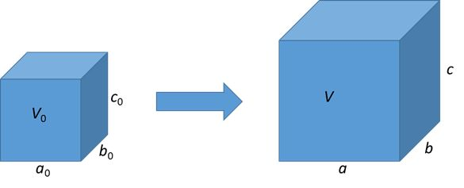
\[ a = \left( {1 + {\varepsilon_1}} \right){a_0} \]
\[ b = \left( {1 + {\varepsilon_2}} \right){b_0} \]
\[ c = \left( {1 + {\varepsilon_3}} \right){c_0} \]
The volume of the strain body is
\[ V = abc = \left( {1 + {\varepsilon_1}} \right)\left( {1 + {\varepsilon_2}} \right)\left( {1 + \varepsilon{_3}} \right){a_0}{b_0}{c_0} \]
The volumetric strain, or dilation is defined as
\[ {\rm{\Delta }} = \frac{{{\rm{\Delta }}V}}{{{V_0}}} = \frac{{abc - {a_0}{b_0}{c_0}}}{{{a_0}{b_0}{c_0}}} = \left( {1 + \varepsilon{_1}} \right)\left( {1 + {\varepsilon_2}} \right)\left( {1 + {\varepsilon_3}} \right) - 1 = {\varepsilon_1} + {\varepsilon_2} + {\varepsilon_3} + O\left( {{\varepsilon^2}} \right) \]
The higher order terms are negligible for small strains, which is indeed true if we want to consider the case for volume conservation.
Now using Poisson’s ratio for isotropic materials,
\[ {\varepsilon_2} = {\varepsilon_3} = - \nu {\varepsilon_1} \]
If volume is conserved,
\[ {\rm{\Delta }} = 0; {\varepsilon_1} + {\varepsilon_2} + {\varepsilon_3} = 0; \left( {1 - 2\nu } \right){\varepsilon_1} = 0 \]
We have Poisson’s ratio \( \nu = 0.5 \) for volume conservation.
We have the Maxwell relation,
\[k\varepsilon\dot = \frac{1}{{{t_{\rm{R}}}}}\sigma + \dot \sigma \]
Impose oscillatory stress and strain (we use complex function to construct oscillatory functions, but only the real part is meaningful),
\[ \sigma = {\sigma _0}{\rm{exp}}\left( {i\omega t} \right) \] \[ \varepsilon = {\varepsilon_0}{\rm{exp}}\left( {i\left( {\omega t - \phi } \right)} \right) \]
The Maxwell relation becomes,
\[ k\left( {i\omega } \right){_0}{\rm{exp}}(i\left( {\omega t - \phi )} \right) = \frac{1}{{{t_{\rm{R}}}}}{\sigma _0}\exp \left( {i\omega t} \right) + \left( {i\omega } \right){\sigma _0}\exp \left( {i\omega t} \right) \] \[ k\left( {i\omega } \right){_0}{\rm{exp}}(i\left( {\omega t - \phi )} \right) = {\sigma _0}\exp \left( {i\omega t} \right)\left( {\frac{1}{{{t_{\rm{R}}}}} + i\omega } \right) \]
The complex Young’s modulus is defined as
\[ E = \frac{\sigma }{\varepsilon}\] \[ \quad = \frac{{{\sigma _0}\exp \left( {i\omega t} \right)}}{{{\varepsilon_0}{\rm{exp}}\left( {i\left( {\omega t - \phi } \right)} \right)}} \] \[ \quad = \frac{{k\left( {i\omega } \right)}}{{\frac{1}{{{t_{\rm{R}}}}} + i\omega }} \] \[ \quad = \frac{{ki\omega {t_{\rm{R}}}}}{{1 + i\omega {t_{\rm{R}}}}} \] \[ \quad = \frac{{ki\omega {t_{\rm{R}}}}}{{1 + i\omega {t_{\rm{R}}}}}\frac{{1 - i\omega {t_{\rm{R}}}}}{{1 - i\omega {t_{\rm{R}}}}} \] \[ \quad = \frac{{ki\omega {t_{\rm{R}}} + k{\omega ^2}t_{\rm{R}}^2}}{{1 + {\omega ^2}t_{\rm{R}}^2}} \] \[ \quad = \frac{{k{\omega ^2}t_{\rm{R}}^2}}{{1 + {\omega ^2}t_{\rm{R}}^2}} + i\frac{{k\omega {t_{\rm{R}}}}}{{1 + {\omega ^2}t_{\rm{R}}^2}} \]
Only the real part has physical meaning, so the Young’s modulus is
\[ E = \frac{{k{\omega ^2}t_{\rm{R}}^2}}{{1 + {\omega ^2}t_{\rm{R}}^2}} \]
The ratio between real and complex part indicates the phase difference,
\[ \phi = \arctan \left( {\frac{{\frac{{k\omega {t_{\rm{R}}}}}{{1 + {\omega ^2}t_{\rm{R}}^2}}}}{{\frac{{k{\omega ^2}t_{\rm{R}}^2}}{{1 + {\omega ^2}t_{\rm{R}}^2}}}}} \right) = {\rm{arctan}}\left( {\frac{1}{{\omega {t_{\rm{R}}}}}} \right) \]
Academic consultant: Rob Thompson, Jess Gwynne, Peiyu Chen (University of Cambridge)
Content development: Zetai Xu
Photography and video: Zetai Xu
Web development: David Brook, Lianne Sallows
This DoITPoMS TLP was funded by the Peter Mason Fund in conjunction with the Worshipful Company of Armourers and Brasiers and the Department of Materials Science and Metallurgy, University of Cambridge.